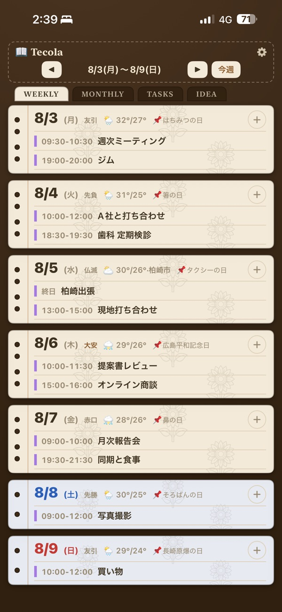
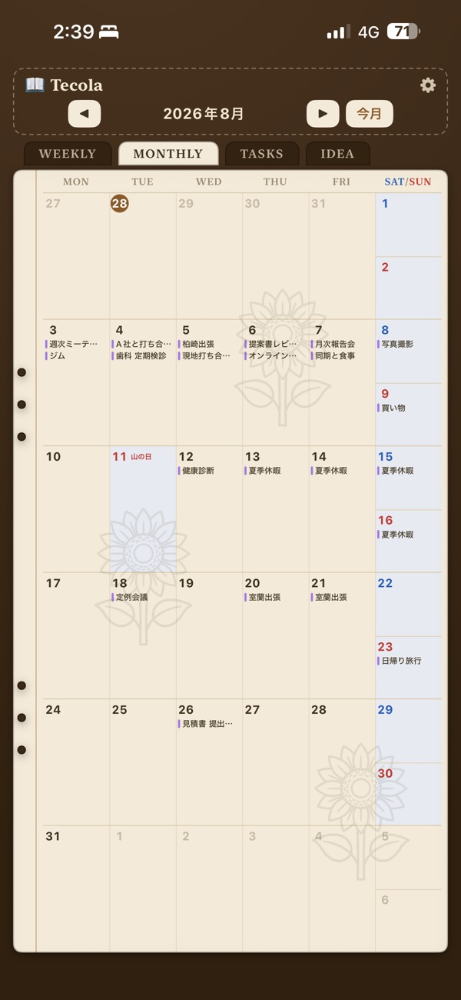
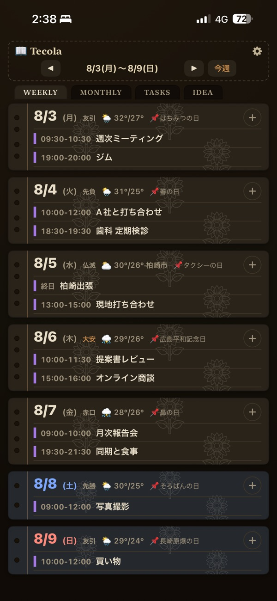
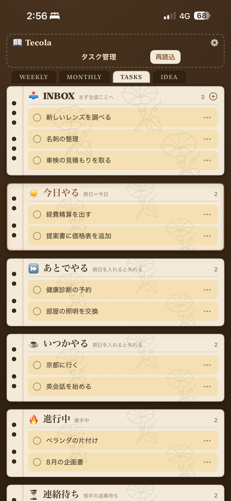
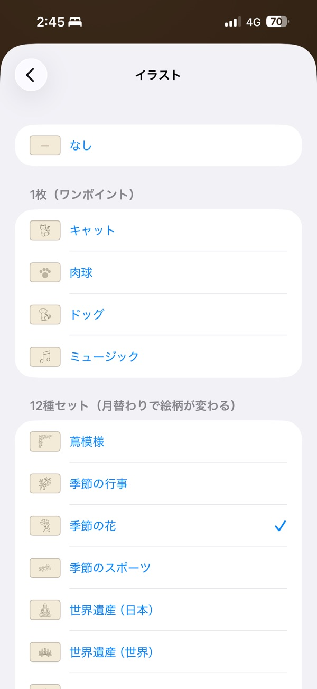
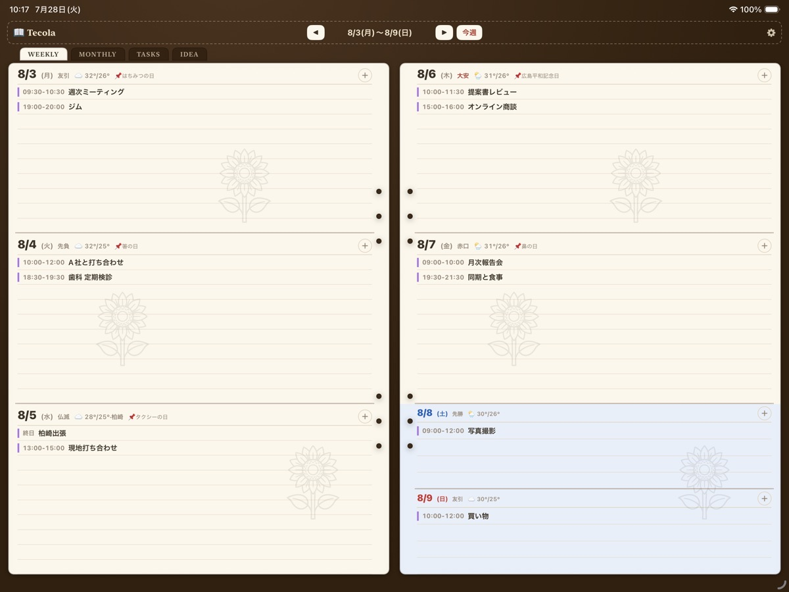
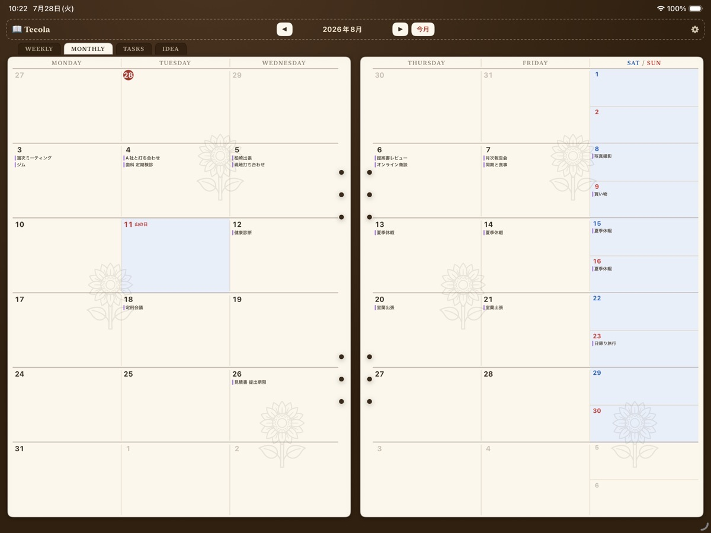
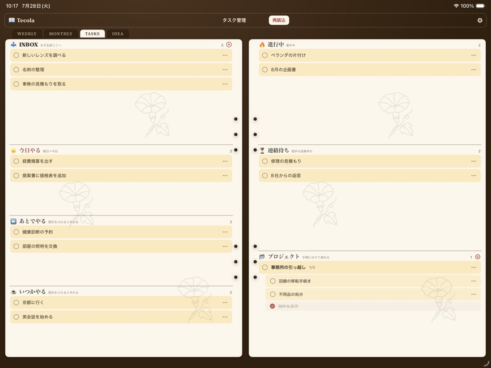

Tecola
テコラ
システム手帳風の週間カレンダー。
紙のシステム手帳が好きだった方へ。革のカバーと差し替え用紙をモチーフにした「週間見開き」のカレンダーです。1週間の予定・タスク・六曜・天気を1画面で見渡せます。
- iPhone
- iPad
- Mac
- 一度の購入で全部の端末に
- データの収集なし



手帳をめくるように、1週間を見渡す
お使いのカレンダー（iPhone に設定済みの Google カレンダー・iCloud カレンダーなど）をそのまま表示します。予定の追加・編集・削除もアプリの中で。
週間ページと月間ページ
iPad は手帳の見開き、iPhone は1週間の一覧。スワイプで前週・次週へ。月間ページから日付を押すと、その週へ飛べます。
日付の欄はまるで手帳
六曜、「今日は何の日」、名前つきの祝日。土日祝は紙の色も変わり、今日のページには赤いしおりのリボン。
出張先の天気に自動で切り替え
ふだんは自宅の天気。予定の題名に「出張」と地名があれば、その日だけ出張先の天気に変わります。
Google タスクと連携（任意）
ログインすると、タスクを期限日の欄に表示。チェックで完了、押して編集。ログインしなくてもカレンダーの機能はすべて使えます。
カバーと用紙を選べる
カバー4色、用紙6色、紙に入るイラストは月替わりのセットも。用紙のデザインを見る
ホーム画面のウィジェット
「今日」または「今日と明日」の予定・タスク・六曜・天気を表示できます。
用紙とカバーを、好みの組み合わせで
カバーの色、紙の色、紙に薄く入るイラストを、それぞれ別々に選べます。下で選ぶと、右の見本の週間ページがその組み合わせに変わります。アプリでは設定（⚙️）の「デザイン」から変えられ、ウィジェットにも反映されます。
カバーの色
用紙の色（背景色）
イラスト
「12種セット」は、表示している月に合わせて絵柄が変わります。月を変えて見比べてください。ワンポイントにはほかに「肉球」もあります。
イラストの表示量
イラストの大きさ
表示
見本は iPhone の週間ページをもとにした、ページの上での再現です。実際の画面とは細かいところが違います。
画面
横にすべらせると、ほかの画面も見られます。
iPhone


iPad



よくある質問
予定が表示されません。
カレンダーへのアクセス許可が必要です。iOSの「設定」→「アプリ」→「Tecola」→「カレンダー」で「フルアクセス」を許可してください。表示するカレンダーはアプリ内の⚙️設定画面で選択できます。
Googleアカウントは必要ですか？
不要です。Googleタスク連携は任意機能で、利用する場合のみ設定画面からログインします。
Googleタスクのログインで「このアプリは Google で確認されていません」と出ます。
Tecola が Google の確認をまだ受けていないために出る画面です。次の順に進むとログインできます。
1. 左下の「詳細」を押します（右の青い「安全なページに戻る」を押すと、ログインをやめて戻ります）
2. 画面の下に出る「Tecola（安全ではないページ）に移動」を押します
3. Tecola がアクセスする内容を確かめて「続行」を押します
タスクの内容は、お使いの端末と Google のあいだで直接やりとりされ、開発者には届きません。
天気が表示されません。
天気の取得にはインターネット接続が必要です。予報範囲は約2週間先までのため、それより先の日付には表示されません。地点はアプリ内の設定画面（自宅地点・出張ルール）で変更できます。
ウィジェットに何も表示されません。
先にアプリ本体を開き、カレンダーへのアクセスを許可してください。その後ホーム画面を長押し→「＋」→「Tecola」で追加できます。
六曜や「今日は何の日」の内容は正確ですか？
六曜は天文計算による参考情報、「今日は何の日」は一般的な記念日をまとめた参考情報です。行事や契約などの正式な判断にはご利用にならないでください。
お問い合わせ
ご質問・不具合のご報告・ご要望は、メールでお気軽にどうぞ。通常2〜3営業日以内にお返事します。
不具合のご報告の際は、お使いの機種・iOS のバージョン・状況（スクリーンショットなど）を添えていただけると助かります。Tecola は個人のデータを集めません。くわしくは プライバシーポリシー をご覧ください。天気予報は Open-Meteo の気象データを使っています。